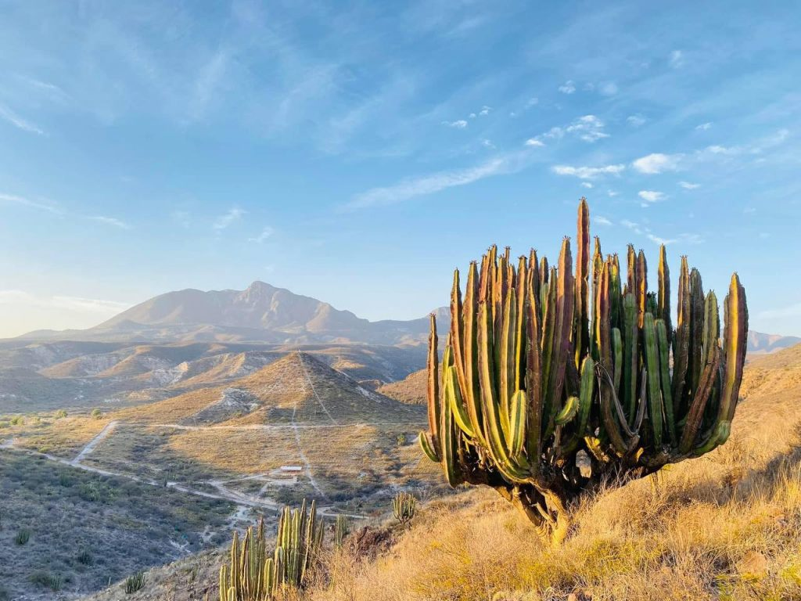
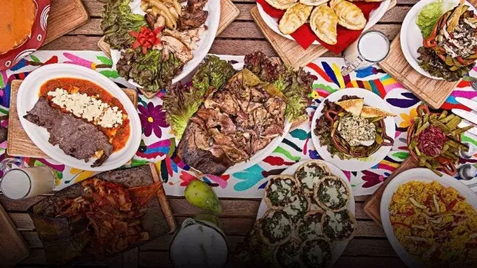
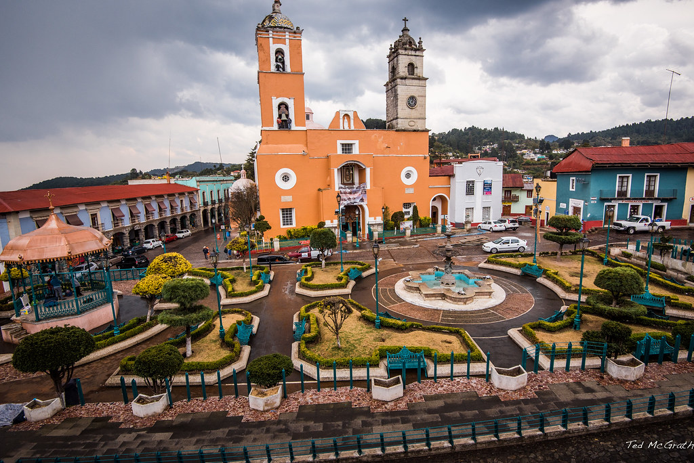
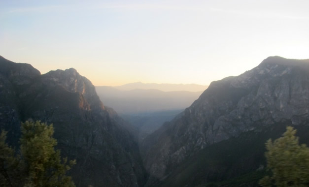
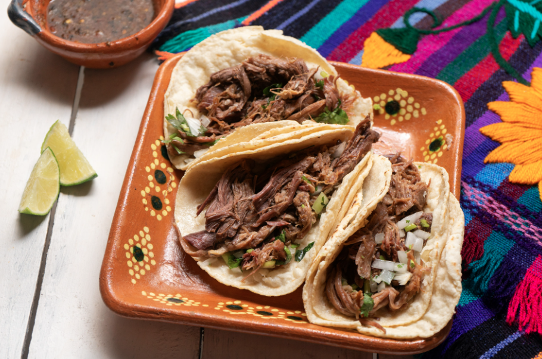
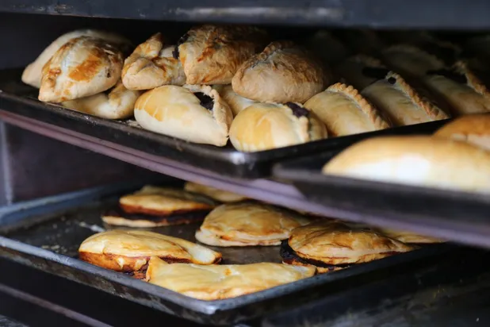
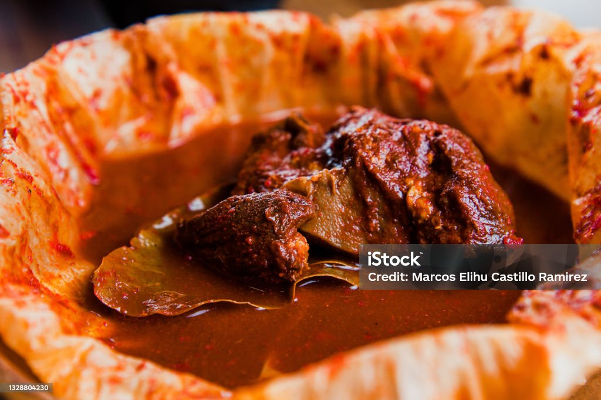

Valle del Mezquital
Semi-arid land of maguey and nopal, the home of Otomí cooking: barbacoa, mixiote, ximbó and escamoles.

From pit-cooked barbacoa to miners’ pastes and Huasteca zacahuil, discover the dishes, regions and stories behind the flavors of Hidalgo, Mexico.
Hidalgo’s geography shapes what people cook. Each region adds its own ingredients and techniques.

Semi-arid land of maguey and nopal, the home of Otomí cooking: barbacoa, mixiote, ximbó and escamoles.

Real del Monte and Pachuca, where Cornish miners left pastes as a lasting culinary legacy.

Humid, green lands of corn, coffee and banana leaves, home of zacahuil and Sierra moles.

Valle del Mezquital
Lamb slow-cooked in an underground pit lined with maguey leaves, traditionally served on weekends with consomé, tortillas and salsa. A symbol of Hidalgo’s Otomí heritage.

Real del Monte & Mineral del Monte
Baked turnovers filled with potato and meat, tied to Cornish miners who arrived in the 19th century. Today they come in savory and sweet versions.

Valle del Mezquital
Seasoned meat marinated in chile pastes and steamed in a wrapping of maguey membrane or parchment.
Share a dish from your Hidalgo kitchen and help keep its traditions alive.
Share Your Recipe